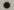

Nival InteractiveManagement & LeadsExecutive Producers: Serge Orlovsky  Alexander DmitrevskyProject Manager: Dmitri Zakharov Lead Game Designers: Pavel Epishin Alexander Mishulin Lead Programmer: Andrey Gulin Art Director: Victor Surkov Lead Artists: Andrew Chernyshov Max Serkov Lead Animator: Olga Baulina Cinematic Director: Nikolay Kozlov Andrew Chernyshov Sound Director: Denis Borzenkov Mikhail Matveev DesignGame Design: Pavel Epishin Alexander Mishulin Dmitry Devishev Interface Design: Alexander Mishulin Oleg Belaychook Mission Design: Pavel Epishin Alexander Mishulin Pavel Eliseev Dmitry Nikulin Serge Kozlov Alexander Vinnikov Ilya Stremovski Vitaly Orlov Ivan Fedyanin Alexander Andreev Historian: Boris Yulin Scenario & TextworkScenario Concept: Timur Suleimenov Pavel Epishin Pavel Eliseev Alexander Mishulin Scenario System Design: Pavel Epishin Pavel Eliseev Alexander Mishulin Ilya Stremovski Character Design and Dialogue: Shaun Lyng Interface Textwork: Ilya Stremovski Shaun Lyng User and MapEditor Manuals: Iaroslav Tchebotarev Alexander Mishulin Serge Kozlov Programming3D Engine Programming: Andrey Gulin Alexander Dmitriev Anton Krugliakov Alexander Sabelnik Data Randomization System Programming: Alexander Sabelnik Igor Falomkin RPG System Programming: Andrey Plakhov Alexander Sabelnik Igor Falomkin Anton Krugliakov Pavel Epishin Physics Programming: Alexander Dmitriev Alexander Sabelnik Andrey Plakhov Animations Programming: Alexander Dmitriev Andrey Plakhov AI Programming: Igor Falomkin Andrey Plakhov Interface Programming: Anton Krugliakov Sound Programming: Alexander Sabelnik Map Editor Programming: Alexander Sabelnik Tools Programming: Alexander Sabelnik Alexander Dmitriev Andrey Gulin LifeMode Heads Integration: Alexander Sabelnik Alexander Dmitriev Additional Programming: Alexander Dmitriev Andrew Chernyshov Igor Falomkin Yuri Blazhevich Autorun and Installation Wizard Programming: Konstantin Manurin ArtworkConcept Artist: Alexander Panov Victor Surkov Vsevolod Martynenko 2D Art and Textures: Natalia Brintseva Alexander Panov Elena Pozhilova Maria Shilina Margarita.Guryeva 3D Modeling: Alexey Borzykh Andrew Chernyshov Daniil Shipitsyn Max Serkov Eugene Melkov 3D Animation: Sergey Sevaev Boris Korshunov Alexey Serkov Olga Novikova Max Serkov Interface Art: Victor Surkov Elena Pozhilova Alexander Panov Box Design: Victor Surkov Special Effects: Daniil Shipitsyn Alexey Borzykh Cinematic Artists: Alexander Korabelnikov Igor Boblak Music, SFX, Voice-overMusic: Andrey "Archont" Fedorenko SFX: Mikhail Matveev Denis Borzenkov English Voice Over Produced and Directed: Shaun Lyng Sound Engineer: Marc Andre Bourbonnais English Voice Over Actors: Sonja
Ball
Tyrone Benskin
Pierre Brault
Mark Camacho
Luis de Cepedes
Carrie Colak
Tedd Dillon
Richard M. Dumont
Holly Gauthier Frankel Susan
Glover
Alain Goulem
Arthur Holden
Matt Holland
Alex Ivanovici Rick
Jones
John Koensgen
Pierre Lenoir
Pauline Little
Bronwen Mantel
David L. McCallum Simon
Peacock Terrence
Scammell Jennifer
Seguin Harry
Standjofski John
Stocker Ross
Wilson MarketingPublic Relations Managers: Mike Allenson Eugenia Bannikova Michael Badelin Community Managers: Elena Churakova Yuri Markin Dmitry Kolpakov Andrey Gorev Dilyara Mukatova Posters and Marketing Art: Ivan Troitsky Irina Shestakovich Alexey Borzykh Stanislav Pidruchniy Web and User Manual Design: Iraida Bashinskaya Artem Ivlev QA Manager: Leonid Cheorny Testers: Ivan Fedyanin Oleg Susov Vitaly Orlov Alexander Zhebrovsky Alexander Andreev Maxim Vasiliev Beta version testers: Pavel Kruckov
Daniil Ermolaev Dmitry
Levchenko
Dmitry Nikulenov Dmitry
Komolov
Alexey Dorofeev
Gleb Schukin Administration: Alexander Ivanov Alexander Roschin Dmitry Nemtchinov Ekaterina Nepomnyaschaya Elena Rubanova Maria Riazanova Olga Chapurskaya Olga Fedeshova Vladimir Filkov LocalisationLocalization Issues: Vassily Podobed Aleksei Gilenko Ilya Stremovski Translator: Vsevolod Korolev Special Thanks: Frank Heukemes George Ossipov Alexey Serkov Eugene Ermakov Ivan Tyaglov Alexander Shmatov Alexander Smolovoy Alexey Smolovoy Anna Andreeva Artem Rybakov Artur Smeliy Elena Endelina Igor Fedorov Marina Sukonina Nina Iskanderova Oleg Belyakov Svetlana Gureshova Svetlana Leonova Svetlana Shmatova Tatiana Kuznetsova JoWooD Productions Software AGJoWooD Team — GermanyHead of Development: Erik Simon Production Supervisor: Boris Kunkel Executive Producer: Ralf Adam Producer: Christian Braun JoWooD Team — AustriaInt. QA, Purchasing & Production Director: Fritz Neuhofer International Marketing Manager: Georg T. Klotzberg Director Product Management: Michael Hengst Product Manager: Kay Gruenwoldt Art Director: Christian Glatz Graphic Artist: Jaqueline Zweck Sabine Schmid Localisation Manager: Nikolaus Gregorcic Int. Security & Protection Manager: Gerhard Neuhofer Leadtester: Norbert Landertshamer Robert Hernler Stefan Spill Testers: Jorg Berger
Markus Brucher
Martin Bucher
Uwe Drescher
Benedikt Eibl Katharina
Grassegger
Georg Grieshofer Petra
Grossegger
Anton Handl
Oliver Helmhart
Barbara Hochwimmer
Andreas Kainer
Christian Kargl
Stefan Klaschka Alexander
Kumer Rudolf
Kussberger
Peter Lippusch
Hedwig Matl
Mario Moser
Bernd Pichlbauer
Harald Ploder
Stefan Pollheimer
Mihai Popescu
Stephan Radosevic
Eveline Rinesch Walter
Schmiedhofer
Gerald Schurl
Matthias Thurner
Dagmar Tiefenbacher Kai
Mayer Thomas
Schwarzl Stefan
Reitmaier Harald
Fritz Special thanks to: "Hopper" Sascha Pieroth Oliver Staude-Mueller Nick Porsche All Copyrights ©Silent Storm © 2003 Nival Interactive. All rights reserved.Silent Storm is a trademark of Nival Interactive. Published by JoWooD Productions. FMOD sound and music system, copyright © Firelight Technologies, Pty, Ltd. 1994-2002. Used under license. Uses Bink Video Technology. Copyright © 1997-2002 by RAD Game Tools, Inc. Used under license. LifeStudio:HEAD Tool and API © 2001-2002 LifeMode Interactive Corporation. Used under license. Artbeats Digital Film Library. Sound Ideas Copyright © 1992 Digital SFX Library Series 6000 — The General All Rights Reserved. Acknowledgements We would like to thank the developers of free software technologies used in this product. Lua script language designed and written by Waldemar Celes, Roberto Ierusalimschy and Luiz Henrique de Figueiredo. Lua Copyright © 1994-2000 Tecgraf, PUC-Rio. All rights reserved. See www.lua.org for details. Libpng Copyright © 2000-2002 Glenn Randers-Pehrson. See www.libpng.org for details. Zlib Copyright © 1995-2002 Jean-loup Gailly and Mark Adler. See www.gzip.org/zlib for details. Scintilla Copyright © 1998-2002 by Neil Hodgson "[email removed]". See www.scintilla.org for details STLport Copyright © 1999,2000 Boris Fomitchev. See www.stlport.org for details. MSDE 2000 Copyright © 2000 Microsoft Corporation. All rights reserved. See www.microsoft.com/sql/techinfo/development/2000/MSDE2000.asp for details. |